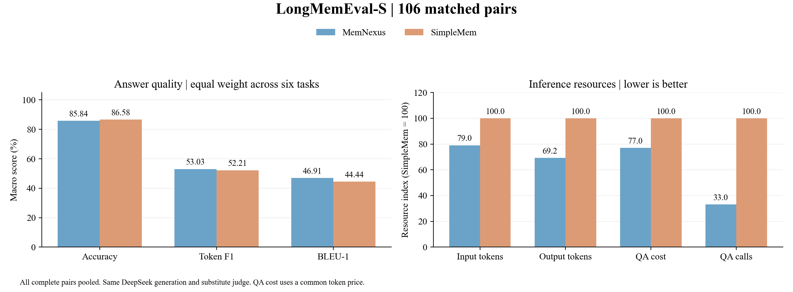
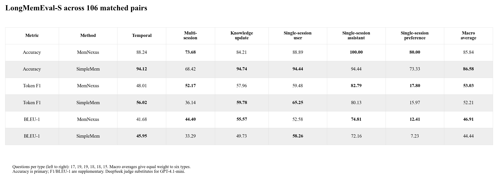
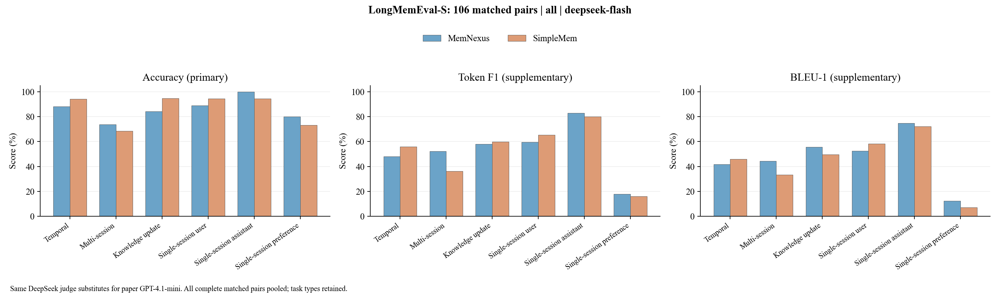
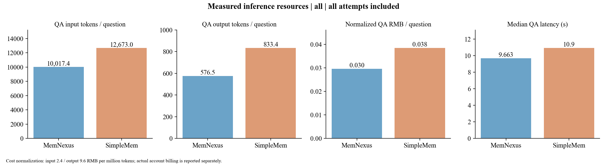
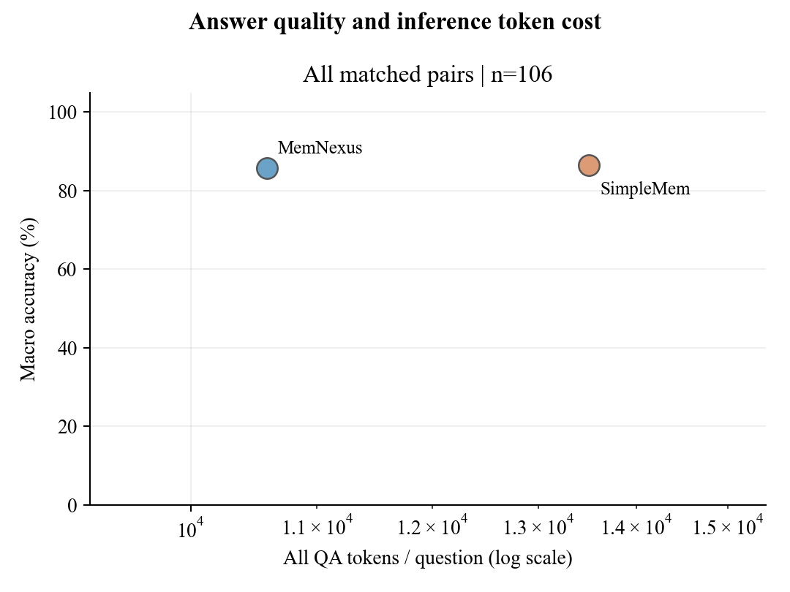
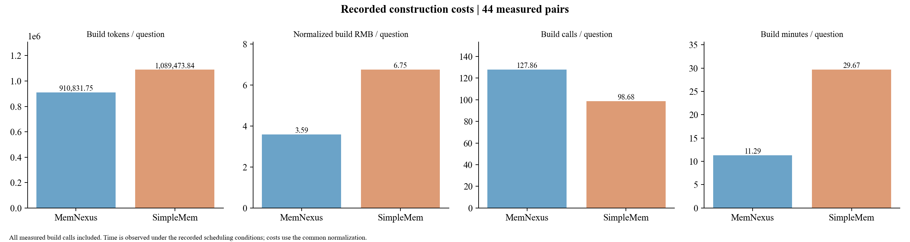

状态：已按用户要求停止，以下为最终完整配对结果。结果随完整配对更新，未完成的单侧答案不进入对比。
生成模型 deepseek-flash；评审沿用 SimpleMem Appendix A.4，DeepSeek 替代 GPT-4.1-mini。准确率为主指标；F1、BLEU-1为补充。QA token 覆盖全部规划、反思、生成与修复调用，不等同于论文仅检索上下文的 Token Cost。评审调用费用纳入实验总支出，单独记账，不计入任一系统的 QA 成本。

全部配对中，MN / SM 的宏平均准确率为 85.84% / 86.58%，按题目等权的准确率为 85.85% / 86.79%。MN 的 QA 输入 token 比 SM -21.0%，输出 token -30.8%，统一价格下 QA 费用 -23.0%。
目前最明确的贡献证据是 QA 资源节省及可追溯的原文引用、算术执行；是否质量更高，要看统一样本的配对差异与分题型结果。差异区间包含零时，不据此声称显著优于或已经证明非劣。
统一106题中，MN答对91题，SM答对92题；84题共同答对，7题仅MN答对，8题仅SM答对，7题共同答错。宏平均 Token F1 为53.03 / 52.21，BLEU-1为46.91 / 44.44。当前结果支持“接近的准确率、更好的词汇重合指标、更低的QA资源消耗”。
按题型看，MN在历史助手回答（18/18 对17/18）、跨会话（14/19 对13/19）与偏好（12/15 对11/15）上领先；知识更新（16/19 对18/19）是最大的净失分来源，时间推理（15/17 对16/17）和用户事实（16/18 对17/18）各少答对一题。后续优先完善新旧状态选择、时间语义和候选证据进入答案端的过程。
① 历史意图或习惯保留为会话短期记忆后，原文搜索虽有机会找到，仍可能被主检索和最终排序弱化；② 正确前提已经可见时，推断仍可能过度保守，或把条件不满足的背景数值放到主答案；③ 日期窗口、状态截止时点和请求单位没有始终一致；④ 个性化依据有时只出现在内部推导，未进入最终建议。修复方向是现有索引、排序和单一答案表的语义契约，不是新增检索分支或题型专用生成器。
已配对样本中，104/106 道答案端看到长期记忆，68/106 道引用了长期记忆。这证明长期记忆已经参与检索和回答；引用次数不能替代关闭长期记忆的消融实验，也不能独立证明准确率提升。未晋升但仍有用的用户意图与更新事实，需要通过现有原文回读通道保持可访问。
按用户要求停止所有实验进程，统一统计106道完整配对。另4道仅MN完成、SM建库未完成，不纳入任何配对质量或资源均值。全部调用回执按服务商时段与缓存价格估算 192.66 元，其中未完成配对工作约 13.76 元。停止后读取的账户余额为 108.06 元。另有1条停止时在途请求未取得回执，其保守折算上限为 0.362 元；不视作免费，也不计入已核实的token汇总。
所有生产代码全程冻结，48个源文件哈希通过校验。仅修改了实验报告与审计工具；没有根据本轮错题修改答案、评分或生产逻辑。
| Method | Temporal | Multi-session | Knowledge update | Single-session user | Single-session assistant | Single-session preference | Macro average | Micro average |
|---|---|---|---|---|---|---|---|---|
| MemNexus | 88.24 | 73.68 | 84.21 | 88.89 | 100.00 | 80.00 | 85.84 | 85.85 |
| SimpleMem | 94.12 | 68.42 | 94.74 | 94.44 | 94.44 | 73.33 | 86.58 | 86.79 |




每题 QA 调用次数（含修复）：MemNexus 2.17, SimpleMem 6.57。
按数据集题目 ID 的 abs 标记分组，不以系统是否拒答分组。
| Method | Temporal | Multi-session | Knowledge update | Single-session user | Single-session assistant | Single-session preference | Macro average | Micro average |
|---|---|---|---|---|---|---|---|---|
| MemNexus | 93.75 | 75.00 | 84.21 | 85.71 | 100.00 | 80.00 | 86.45 | 86.73 |
| SimpleMem | 93.75 | 68.75 | 94.74 | 92.86 | 94.44 | 73.33 | 86.31 | 86.73 |
| Method | Temporal | Multi-session | Knowledge update | Single-session user | Single-session assistant | Single-session preference | Macro average | Micro average |
|---|---|---|---|---|---|---|---|---|
| MemNexus | 0.00 | 66.67 | — | 100.00 | — | — | — | 75.00 |
| SimpleMem | 100.00 | 66.67 | — | 100.00 | — | — | — | 87.50 |
各题型配对数：Temporal: 17, Multi-session: 19, Knowledge update: 19, Single-session user: 18, Single-session assistant: 18, Single-session preference: 15。宏平均对六类等权，微平均对题目等权。
资源图费用统一按输入 2.4、输出 9.6 元/百万 token 归一化，便于比较，不代表账户扣款。实际价格估算另外依据缓存命中与时段计价。
延迟统一汇总全部106道；测试期间存在不同并行负载，因此这里展示实测分布，不将其解释为隔离环境的加速比。
| Method | n | Median QA seconds | P95 QA seconds |
|---|---|---|---|
| MemNexus | 106 | 9.663 | 15.521 |
| SimpleMem | 106 | 10.910 | 16.288 |
| Method | n | Input tokens / question | Output tokens / question | Normalized RMB / question | Calls / question |
|---|---|---|---|---|---|
| MemNexus | 44 | 716,287.750 | 194,544.000 | 3.587 | 127.864 |
| SimpleMem | 44 | 514,551.318 | 574,922.523 | 6.754 | 98.682 |

截至计价审计时，有 token 回执调用按官网价格估算合计 192.6596 元；未含缺少回执的未知扣费。归一化预算账本另计。
以下问题来自原始证据和答案轨迹核查；保留正式盲评结果，不改写准确率。判对并不表示检索和输出完整无缺。
{
"sample_id": "4dfccbf8_S",
"status": "Formal judge marks both CORRECT; retrieval defect still reproduced",
"memory_id": "mem_76f1e35269a0499f8003dd973887bab4",
"memory_content": "The user just started taking ukulele lessons with their friend Rachel today, and says it has been really fun so far; they asked for tips on practicing effectively and improving chord changes.",
"valid_from": "2023-02-01 14:38:00+00:00",
"planned_as_of": "2023-02-01 00:00:00+00:00",
"candidate_in_pack_selection": false,
"eligibility_reproduction": {
"original": false,
"labels_removed": false,
"labels_removed_no_point_cutoff": true,
"labels_removed_end_of_day": true
},
"diagnosis": "The midnight point cutoff excludes the correct same-day event even after removing symbolic labels. History queries with a day/month window cannot be represented by a start-of-day as-of state cutoff. Raw-source fallback did not recover this event. No production change made.",
"next_design": "Preserve event-time window separately from state-as-of semantics within the existing query plan. Reuse recall/grounding stages; verify day boundaries and state updates before adopting any fix.",
"interpretation": "The MN response mentions ukulele lessons in a parenthetical alongside a missing-date caveat, sufficient for this judge. Do not count this as an accuracy error; retain it as a trace-confirmed defect and answer-quality issue."
}{
"sample_id": "b6025781_S",
"status": "Formal judge marks both CORRECT; candidate visibility gap confirmed",
"stage": "memory durability and cross-channel evidence selection",
"evidence": [
"The explicit user request for protein sources with quinoa and roasted vegetables was extracted but remained session-scoped short memory.",
"Indexed sweep recovered that memory as candidate mem_fc2028d0b97f4d099128ca1f4b394aac:1, selection rank49, upstream rank11, cost580. It was rejected for serialized_budget at used15570.",
"Reader received unrelated recent debate and gift/streaming/job-search facts, plus snack and fries preferences; original quinoa user premise was absent.",
"Reader excluded assistant quinoa meal-prep suggestions as user preference evidence, correctly distinguishing speaker but lacking the original user request."
],
"root_cause": "Relevant user premise survives storage and recovery but loses the shared reading budget; session-scoped user requests are absent from main long-memory recall. Multiple channel rank positions promote weak recent-session candidates alongside genuinely relevant older facts.",
"next_design": "Audit the existing candidate fusion and reading-unit selection; relevant presupposed preferences in requests should remain available without converting every request into a durable fact. No extra retrieval branch and no recipe-specific filtering.",
"production_changed": false,
"interpretation": "MN includes roasted sweet potato/quinoa bowl, satisfying part of the gold preference. Additional candy granola and double-fried fries are weakly aligned. Do not override official paired accuracy or call this a scored error."
}{
"sample_id": "bcbe585f_S",
"status": "Formal judge both CORRECT; output-unit mismatch confirmed, not an accuracy error",
"stage": "deterministic temporal rendering",
"evidence": "Raw reader response correctly supplies about 4 weeks ago (4 weeks and 2 days), operation=time_since, unit=weeks, source date2023-04-01 and question date2023-05-01. Final table value becomes30 days ago. synthesis.py catches inexact calendar_difference and unconditionally falls back to days when endpoints are not divisible by7.",
"root_cause": "The exact arithmetic is correct but drops the requested unit. Avoiding unsafe rounding is reasonable; treating inexact whole weeks as a reason to omit weeks is unnecessary.",
"generalization": "Preserve exact quotient and remainder for fixed-length units (e.g.4 weeks and2 days) and interval/sign semantics; calendar month/year conversion needs separate precision-aware handling. No event-specific rounding or gold-driven format.",
"production_changed": false
}{
"sample_id": "59524333_S",
"status": "both judged CORRECT; state-update ambiguity and output emphasis remain",
"evidence": "Reader saw user statement7pm Mon/Wed/Fri dated2023-02-11 and usual6pm dated2023-05-30. It called them conflicting, led with7pm, and appended later6pm. SM answered6pm Mon/Wed/Fri, combining newer time with older weekday scope.",
"diagnosis": "MN preserves competing statements but does not prioritize the later usual-time assertion in its main answer; SM drops the conflict and may carry old weekday scope forward without an explicit update link. The gold expects6pm, and the judge accepts both because both contain6pm.",
"next_design": "Use source dates and same-state scope to present latest supported state first, retain contextual weekday distinctions where unresolved. Do not mechanically overwrite all older facts or judge internal match labels as truth.",
"production_changed": false
}以下是本轮冻结版本的轨迹分析，尚未据此修改生产代码。其中原文时间或指代不明确的题目，保留证据歧义，不为匹配参考答案强行补事实。
| 题目 | 环节 | 观察到的问题 | 后续方向 |
|---|---|---|---|
| 医生数量 gpt4_f2262a51_S | 断言范围 | 模型已选对三位医生，但后半句的 if 被当作整段条件，正确引用遭验证拒绝。 | 修正语法作用域，保留真实否定和条件。 |
| 宠物品种 75499fd8_S | 断言范围 | 问题中的“像 Max 这样的金毛”含已知前提，却被整体当成无事实的问题。 | 区分被询问的内容与问题携带的已知前提。 |
| 海报对应学校 a96c20ee_abs_S | 答案角色 | 已发现项目限定未匹配，仍把附近的 Harvard 放在主答案。 | 让未绑定的背景候选保留其不确定身份。 |
| 艺术活动计数 2ce6a0f2_S | 集合成员判断 | 历史博物馆参观的原文包含艺术内容，但被排除出艺术活动集合。 | 改善基于原文的成员判断，计数器本身并未算错。 |
| 周六起床时间 dad224aa_S | 新旧状态解释 | 较新7:30被理解成偏好，主答案选择较旧8:30。 | 明确实际记录、习惯与偏好的更新关系。 |
| 购买先后 0977f2af_S | 原文时间歧义 | 把提及 Instant Pot 的时间等同于购买时间；实际购入顺序并不完全明确。 | 分开记录时间与事件时间，保留有根据的条件结论。 |
| 手机续航建议 09d032c9_S | 推断与建议 | 已有充电宝背景，却要求历史中先有具体续航故障或手机型号。 | 允许依据当前问题情境和已有物品提出新建议。 |
| 购买 NAS 建议 1da05512_S | 答案覆盖 | 内部推导看到了容量不足、外置硬盘需求，最终建议只留下安全性和预算。 | 让最终建议说明最关键的个性化依据。 |
| 网球频率更新 f685340e_S | 证据选择 | “每隔一周”完整存储并召回，但索引召回的后续权重为零，被预算挤掉。 | 修正既有候选排名契约，保留原文检索的有效相关性。 |
| 吉他升级建议 95228167_S | 跨会话召回 | Fender→Gibson 的升级意图保留为短期会话记忆，没有进入最终候选。 | 使历史意图可经现有原文通道访问，不强制把全部计划晋升长期。 |
| 周二周四起床 gpt4_2c50253f_S | 可见前提推断 | 7点和提前15分钟都可见，却拒绝建立相对时间关系。 | 检查前提的时间与指代关联，允许有依据的组合推断。 |
| 优惠券兑换地点 51a45a95_S | 对话指代歧义 | 兑换原句未写地点；Target 在邻近对话中，双方均未确认该关联。 | 审核原始会话话题连续性，不仅凭邻近商店名硬绑定。 |
| 最高消费商店 gpt4_2ba83207_S | 时间窗口解释 | 双方把“上个月”消费排除出“过去一个月”，与参考答案冲突。 | 保留区间重叠和日期不确定性，避免直接硬排除。 |
| 入职 Google 前年限 gpt4_93159ced_abs_S | 答案角色 | 明确没有 Google 入职证据，却把总工作9年放在答案开头。 | 区分可回答的独立部分与依赖缺失前提的相邻事实。 |
| 两本小说总页数 37f165cf_S | 条件答案 | 440和416页可见，但原文没有确认题目中的一月/三月，双方全部拒答。 | 可给有条件的856页结论，同时保留月份未证实的限定。 |
| Population | Macro accuracy delta (MN−SM), pp | Stratified paired bootstrap95% interval, pp |
|---|---|---|
| all | -0.75 | [-8.26, 6.6] |
上述宏平均区间按题型分层配对重采样。下述区间为按题目等权的微平均差异，两者不混用；均为探索性描述。
均值差 -0.94 pp；配对 bootstrap 95% 区间 [-8.49056603773585, 6.60377358490566]。检查点为开发阶段的探索性停止判断，不作为反复检验后的正式显著性结论。
How many new postcards have I added to my collection since I started collecting again?
Gold: 25
MN: 25
SM: 25 new postcards
What should I serve for dinner this weekend with my homegrown ingredients?
Gold: The user would prefer dinner suggestions that incorporate their homegrown cherry tomatoes and herbs like basil and mint, highlighting recipes that showcase their garden produce. They might not prefer suggestions that do not utilize these specific ingredients or do not emphasize the use of homegrown elements.
MN: A quinoa salad with roasted vegetables, mixed greens, and vinaigrette, topped with your homegrown cherry tomatoes and fresh basil or mint, Roasted vegetable salad featuring your homegrown cherry tomatoes, with basil or mint as a fresh garnish
SM: Use your basil, mint, and cherry tomatoes: Caprese salad or Middle Eastern-style salad with basil and mint, pesto pasta or basil-lemon spaghetti, and grilled lamb with mint sauce
What is the name of my hamster?
Gold: You did not mention this information. You mentioned your cat Luna but not your hamster.
MN: Not mentioned in the conversation
SM: Not mentioned in the context
What new kitchen gadget did I invest in before getting the Air Fryer?
Gold: Instant Pot
MN: Not mentioned in the conversation
SM: Not mentioned in the provided context
Verified failure stage: reader event-time reasoning
Report time is substituted for an unknown acquisition time. The source only upper-bounds Instant Pot acquisition; exact ordering is underdetermined by the explicit timestamps, although the benchmark gold is Instant Pot.
User mentions new Instant Pot on May 21 05:48 and Air Fryer got yesterday on May 21 22:54. Reader treats Instant Pot mention date as acquisition date and rejects it as later. Both systems abstain.
I've been having trouble with the battery life on my phone lately. Any tips?
Gold: The user would prefer responses that build upon their previous mention of purchasing a portable power bank, such as suggestions on how to optimize its use, like ensuring it's fully charged before use. They might also appreciate tips on utilizing battery-saving features on their phone. The user may not prefer responses that suggest alternative solutions or unrelated advice.
MN: Not mentioned in the conversation
SM: No battery life tips are available in the provided context; only portable power bank recommendations are mentioned.
Verified failure stage: reader recommendation sufficiency
Recall-style sufficiency is applied to a new-advice request. A relevant possession is dismissed because it does not itself state the current problem, even though the current question supplies that problem.
Planner retrieves charging accessories and the reader sees the user's portable power bank. Reader nevertheless demands a prior stored battery-life problem, phone model or charging habits before giving advice; answers NMI. SM references portable power banks and is judged correct despite not giving actionable tips.
I’m a bit anxious about getting around Tokyo. Do you have any helpful tips?
Gold: The user would prefer responses that utilize their existing resources, such as their Suica card and TripIt app, to provide personalized tips for navigating Tokyo's public transportation. They might not prefer general tips or recommendations that do not take into account their prior preparations.
MN: Use your Suica card for trains and subways, and keep it topped up for smooth transfers. Plan your routes in advance—for example, map out the Shinjuku-to-Tsukiji trip—and use a navigation app for real-time directions. Keep your TripIt itinerary handy to stay organized and reduce travel-day stress. Allow buffer time and ask station staff for help if you feel unsure; being nervous is common and manageable with preparation. Book popular restaurants or timed activities in advance, especially in peak seasons, to reduce uncertainty.
SM: Get a Suica or Pasmo IC card, tap in/out at gates, ask station staff for help, and plan routes with a transit app or Google Maps.
I mentioned visiting a museum two months ago. Did I visit with a friend or not?
Gold: No, you did not visit with a friend.
MN: Unavailable: no museum visit about two months before 11 March 2023 is supported; the only museum visit with a friend (Science Museum behind-the-scenes tour) occurred around 22 October 2022, not two months ago. A museum visit occurring about two months before 11 March 2023, and whether that visit was with a friend.
SM: Not specified; no companion is mentioned for the January 2023 museum visit.
What is my current highest score in Ticket to Ride?
Gold: 132 points
MN: 132 points
SM: 132 points
How long have I been collecting vintage films?
Gold: You did not mention this information. You mentioned collecting vintage cameras but not vintage films.
MN: Not mentioned in the conversation
SM: The context does not mention collecting vintage films; it states you have been collecting vintage cameras for three months as of 28 May 2023.
I'm going back to our previous chat about the Lost Temple of the Djinn one-shot. Can you remind me how many mummies the party will face in the temple?
Gold: 4
MN: 4
SM: 4 mummies
I think we discussed work from home jobs for seniors earlier. Can you remind me what was the 7th job in the list you provided?
Gold: Transcriptionist.
MN: Transcriptionist
SM: Transcriptionist
Can you suggest some activities I can do during my commute to work?
Gold: The user would prefer suggestions related to listening to new podcasts or audiobooks, especially the genre beyond true crime or self-improvement, such as history. They may not be interested in activities that require visual attention, such as reading or watching videos, as they are commuting. The user would not prefer general podcast topics such as true crime or self-improvement, as the user wants to explore other topics.
MN: Listen to podcasts (e.g., history, true crime, self-improvement, or entrepreneur stories like 'How I Built This'), Practice mindful breathing or a short meditation session, Plan and organize a listening schedule for the commute
SM: Listen to audiobooks/podcasts (Audible, Scribd, Apple Podcasts), learn languages (Duolingo, Babbel, Rosetta Stone), catch up on news, mentally prepare, enjoy music, storytelling/comedy podcasts, or guided meditation.
I noticed my bike seems to be performing even better during my Sunday group rides. Could there be a reason for this?
Gold: The user would prefer responses that reference specific details from their previous interactions, such as the replacement of the bike's chain and cassette, and the use of a new Garmin bike computer. They might prefer explanations that connect these details to the observed improvement in bike performance. The user may not prefer responses that fail to acknowledge these specific details or provide vague, general explanations for the improvement.
MN: Yes — the user replaced the bike's chain and cassette on February 1st, which was said to have contributed to improved bike performance.
SM: Yes—replacing the chain and cassette on 1 February 2024 improved the bike's performance.
I'm trying to decide whether to buy a NAS device now or wait. What do you think?
Gold: The user would prefer responses that take into account their current home network storage capacity issues and recent reliance on external hard drives, highlighting the potential benefits of a NAS device in addressing these specific needs. They might not prefer responses that ignore their current storage challenges or fail to consider their recent tech upgrades and priorities. Preferred responses would utilize the user's previous mentions of storage capacity issues and tech investments to inform their decision.
MN: Buy now if you can find a NAS with strong encryption and access control that fits your budget; otherwise wait and compare security-focused models before committing.
SM: The context doesn't address whether to buy now or wait.
Verified failure stage: Reader final value drops the personal premise used in its own derivation
Evidence is visible and understood, but the actionable recommendation loses the user-specific rationale during final value composition. This is a generation coverage failure, not missing original-source indexing.
Reader derivation and supports explicitly include current storage capacity issues and external-hard-drive backup, but value contains only encryption/access-control/budget conditions. The deterministic renderer faithfully emits that incomplete value. SM instead refuses because no historical buy-now decision is present. Both judged WRONG.
What is the difference in price between my luxury boots and the similar pair found at the budget store?
Gold: $750
MN: $750
SM: $750
Where does my sister Emily live?
Gold: Denver
MN: Denver
SM: Denver
How long have I been living in my current apartment in Harajuku?
Gold: 3 months
MN: 3 months
SM: 3 months as of 15 October 2023
How many trips have I taken my Canon EOS 80D camera on?
Gold: five
MN: 5
SM: Five trips
What percentage of the countryside property's price is the cost of the renovations I plan to do on my current house?
Gold: 10%
MN: 10%
SM: 10%
How many fitness classes do I attend in a typical week?
Gold: 5
MN: 5 class
SM: Five fitness classes per week
How much time do I dedicate to practicing violin every day?
Gold: You did not mention this information. You mentioned practing guitar everyday, but not violin.
MN: Not mentioned in the conversation
SM: No information available about violin practice
How much time do I dedicate to practicing guitar every day?
Gold: 30 minutes
MN: 30 minutes daily
SM: 30 minutes daily
I was going through our previous chat and I wanted to clarify something about the prayer of beginners in Tanqueray's Spiritual Life treatise. Can you remind me which chapter of the second part discusses vocal prayer and meditation?
Gold: Chapter 4 of Book 1, titled 'Vocal Prayer and Meditation'.
MN: Chapter 4 of Book 1
SM: Chapter 4 of Book 1, titled 'Vocal Prayer and Meditation'
How many different art-related events did I attend in the past month?
Gold: 4
MN: 3 event
SM: Three art-related events
Verified failure stage: reader event qualification before deterministic count
Semantic category interpretation is too narrow: event label museum tour outweighed contextual evidence of its art relevance. The deterministic count correctly computed the incorrectly selected set.
Wire source 11 includes the History Museum tour, its date, interest in ancient history and art, and an art-museum request. Reader explicitly excluded it as not art-related. The other three events and dates were selected. SimpleMem also counted three.
I'm looking back at our previous conversation about building a cocktail bar. You recommended five bottles to make the widest variety of gin-based cocktails. Can you remind me what the fifth bottle was?
Gold: Absinthe
MN: Absinthe
SM: Absinthe
What is the total amount I spent on luxury items in the past few months?
Gold: $2,500
MN: 2,500 USD
SM: Not specified in the context
What was the page count of the two novels I finished in January and March?
Gold: 856
MN: Not mentioned in the conversation
SM: Not mentioned in the context
Verified failure stage: qualified inference versus complete refusal
Reader treats unbound months as a reason to suppress the independently computable sum entirely. This is not an arithmetic or retrieval failure for the two page counts.
Reader sees440pageNightingale and416page novel; full raw user history search finds noJanuary book-completion statement and noMarch book-completion statement. Source utterances datedMay22/May27 say justfinished. Gold856 is440+416, but requestedJanuary/March binding is not established in the user history.
I wanted to follow up on our previous conversation about YouTube videos for workplace posture. Can you remind me of the Mayo Clinic video you recommended?
Gold: The video is 'How to Sit Properly at a Desk to Avoid Back Pain' and the link is https://www.youtube.com/watch?v=UfOvNlX9Hh0.
MN: "How to Sit Properly at a Desk to Avoid Back Pain" by the Mayo Clinic: https://www.youtube.com/watch?v=UfOvNlX9Hh0
SM: 'How to Sit Properly at a Desk to Avoid Back Pain' by the Mayo Clinic at https://www.youtube.com/watch?v=UfOvNlX9Hh0
I'm planning to go back to the Natural Park of Moncayo mountain in Aragón and I was wondering, what was the name of that hiking trail you recommended that takes you through the park's most stunning landscapes and offers panoramic views of the surrounding mountainside?
Gold: The GR-90 trail.
MN: GR-90
SM: GR-90
How many tops have I bought from H&M so far?
Gold: five
MN: 5
SM: Five tops
I was looking back at our previous chat and I wanted to confirm, how many times did the Chiefs play the Jaguars at Arrowhead Stadium?
Gold: The Chiefs played the Jaguars 12 times at Arrowhead Stadium.
MN: 12
SM: 12 times
What did I do with Rachel on the Wednesday two months ago?
Gold: I started taking ukulele lessons with Rachel.
MN: Practicing ukulele fingerpicking with exercises Rachel provided (Rachel's ukulele lessons). No source explicitly states what the user did together with Rachel on the specific Wednesday 1 February 2023; only related ukulele lesson/exercise context is supported.
SM: Started ukulele lessons with Rachel (and practiced fingerpicking exercises she gave)
Where did I attend the Imagine Dragons concert?
Gold: Xfinity Center
MN: Xfinity Center
SM: Xfinity Center
I was thinking of trying a new coffee creamer recipe. Any recommendations?
Gold: The user would prefer responses that suggest variations on their existing almond milk, vanilla extract, and honey creamer recipe or new ideas that align with their goals of reducing sugar intake and saving money. They might not prefer responses that recommend commercial creamer products or recipes that are high in sugar or expensive.
MN: Try a vanilla-almond creamer: blend unsweetened almond milk with a little vanilla extract and a small amount of honey (or reduce/omit honey to cut sugar further); this builds on your current almond milk–vanilla–honey creamer while supporting your sugar-reduction goal. For a lower-sugar, money-saving variation, use unsweetened almond milk as the base and sweeten sparingly with honey or a sugar-free sweetener, since you want to reduce sugar intake and save money. Add flavor without much sugar by infusing the almond milk with cinnamon, cocoa, or a splash of vanilla; keep batches small and store them properly to avoid waste and save money.
SM: Try vanilla with almond, coconut, or hazelnut extract; add cinnamon, nutmeg, or cardamom; use cashew or oat milk; or try spring flavors like Lemon Ginger, Strawberry Cream, Caramel Blossom, Mint to Be, and Orange Blossom.
Where did I redeem a $5 coupon on coffee creamer?
Gold: Target
MN: unavailable. The location where the $5 coffee creamer coupon was redeemed is not stated in any source.
SM: The context does not specify where the coupon was redeemed.
Verified failure stage: discourse attribution
Potential failure to carry conversation topic into an elliptical event; do not bind to Target solely because it is nearest retailer. Inspect contiguous original turn sequence.
Coupon redemption user utterance does not name store; preceding/following Target Cartwheel context is visible, but reader treats each quotation independently and says location unstated.
I've been thinking about ways to stay connected with my colleagues. Any suggestions?
Gold: The user would prefer responses that acknowledge their desire for social interaction and collaboration while working remotely, utilizing their previous experiences with company initiatives and team collaborations. They might prefer suggestions of virtual team-building activities, regular check-ins, or joining interest-based groups within the company. The user may not prefer generic suggestions that do not take into account their specific work situation or previous attempts at staying connected with colleagues.
MN: Schedule regular informal virtual coffee breaks (e.g., a weekly Zoom catch-up about non-work topics) to recreate watercooler chats. Raise the idea by first discussing and agreeing with the team, using open-ended questions and inviting feedback rather than pushing it.
SM: Try virtual coffee breaks, online team activities, collaborative projects, informal chat groups on Slack or Microsoft Teams, celebrating milestones, and interest-based groups like book clubs or fitness challenges.
How much screen time have I been averaging on Instagram per day?
Gold: 2 hours
MN: around 2 hours per day
SM: Around 2 hours per day
What is the total number of comments on my recent Facebook Live session and my most popular YouTube video?
Gold: 33
MN: 33 comments
SM: 33 comments (12 on Facebook Live + 21 on YouTube)
I was thinking about rearranging the furniture in my bedroom this weekend. Any tips?
Gold: The user would prefer responses that take into account their existing plans to replace the bedroom dresser and their interest in mid-century modern style, suggesting furniture layouts that accommodate the new dresser and incorporate elements of this design aesthetic. They might not prefer general furniture arrangement tips or suggestions that do not consider their specific design preferences.
MN: Before moving furniture, plan the layout on paper or with tape on the floor, and keep walkways and doors clear. Keep large furniture and appliances out of the direct path between the router and the bedroom, since the signal is already weak there. If possible, raise the router onto a shelf or table and avoid placing it on the floor or behind furniture after rearranging. Anchor the room around your walnut dresser with its satin finish and brass accents/simple knobs, and choose complementary mid-century modern pieces rather than crowding it. Leave space around the bedroom devices (laptop and smart speaker) and test Wi-Fi speeds after moving furniture to confirm coverage.
SM: No relevant tips available in the provided context
I'm looking back at our previous conversation about the Bajimaya v Reward Homes Pty Ltd case. Can you remind me what year the construction of the house began?
Gold: 2014.
MN: 2014
SM: 2014
What time do I usually go to the gym?
Gold: 6:00 pm
MN: 7:00 pm (on Mondays, Wednesdays, and Fridays); a later statement mentions 6:00 pm
SM: 6:00 pm on Mondays, Wednesdays, and Fridays
How many times have I tried making a Negroni at home since my friend Emma showed me how to make it?
Gold: 10
MN: 10
SM: 10 times
How many projects have I been working on simultaneously, excluding my thesis?
Gold: 2
MN: 2 projects
SM: Two projects (Data Mining and Database Systems)
I've been feeling a bit stuck with my paintings lately. Do you have any ideas on how I can find new inspiration?
Gold: The user would prefer responses that build upon their existing sources of inspiration, such as revisiting Instagram art accounts or exploring new techniques from online tutorials. They might also appreciate suggestions that revisit previous themes they found enjoyable, like painting flowers. The user would not prefer generic or vague suggestions for finding inspiration, and would likely appreciate responses that utilize their recent 30-day painting challenge experience.
MN: Keep momentum with your 30-day painting challenge by setting small daily prompts or themes, and try a new medium or subject each session to break the rut. Lean into social media and art communities for fresh inspiration—follow artists whose style excites you, join challenges, and engage with content that motivates you. Brainstorm with others: since you enjoy collaborating to develop ideas and strategies, try a joint painting session or ask a friend or art group to critique and riff on your work. Apply your creative problem-solving approach: pick one specific painting problem (e.g., color, composition) and experiment with innovative solutions, treating it as a design challenge.
SM: Seek inspiration from social media, art communities, or other sources and engage with content that excites and motivates you.
I'm checking our previous chat about the shift rotation sheet for GM social media agents. Can you remind me what was the rotation for Admon on a Sunday?
Gold: Admon was assigned to the 8 am - 4 pm (Day Shift) on Sundays.
MN: 8 am - 4 pm (Day Shift)
SM: Admon was assigned to Sunday, but the specific shift is not specified in the context.
How many episodes of the Science series have I completed on Crash Course?
Gold: 50
MN: 50
SM: 50 episodes
How much did I spend on a designer handbag?
Gold: $800
MN: $800
SM: $800
What breed is my dog?
Gold: Golden Retriever
MN: Not mentioned in the conversation
SM: Golden Retriever
Verified failure stage: source speech-act policy / validation
Sentence-level question classification discards presupposed descriptive facts inside a request. The fact was extracted, retrieved, read and correctly bound; deterministic validation erased it.
Both initial and repair readers correctly returned Golden Retriever, citing a Golden Retriever like Max. Original user question asked for collar recommendations suitable for a Golden Retriever like Max, not whether Max was a retriever. Native validator rejected it because the supporting span was context_only.
I was looking back at our previous conversation about Caribbean dishes and I was wondering, what was the name of that Jamaican dish you recommended I try with snapper that has fruit in it?
Gold: Grilled Snapper with Mango Salsa
MN: Escovitch Fish. No Jamaican snapper dish with fruit was recommended; the fruit-containing snapper dish (Grilled Snapper with Mango Salsa) is not identified as Jamaican.
SM: No such Jamaican snapper dish with fruit is mentioned in the context; Grilled Snapper with Mango Salsa has fruit but is not described as Jamaican.
How much more did I have to pay for the trip after the initial quote?
Gold: $300
MN: $300
SM: $300 more
How long have I been sticking to my daily tidying routine?
Gold: 4 weeks
MN: 4 weeks
SM: 4 weeks
I'm looking back at our previous chat about the DHL Wellness Retreats campaign. Can you remind me how much was allocated for influencer marketing in the campaign plan?
Gold: $2,000
MN: $2,000
SM: $2,000
I'm planning my trip to Amsterdam again and I was wondering, what was the name of that hostel near the Red Light District that you recommended last time?
Gold: International Budget Hostel
MN: International Budget Hostel
SM: International Budget Hostel
How old was I when my grandma gave me the silver necklace?
Gold: 18
MN: 18 years old
SM: 18 years old
How many times did I bake egg tarts in the past two weeks?
Gold: The information provided is not enough. You did not mention baking egg tarts.
MN: Not mentioned in the conversation
SM: No record of baking egg tarts in the past two weeks
Before I purchased the gravel bike, do I have other bikes in addition to my mountain bike and my commuter bike?
Gold: Yes. (You have a road bike too.)
MN: Yes — the road bike (and, after the recent hybrid purchase, also the new hybrid bike)
SM: Yes, a road bike (and later a hybrid bike)
I'm going back to our previous conversation about DIY home decor projects using recycled materials. Can you remind me what sealant you recommended for the newspaper flower vase?
Gold: Mod Podge or another sealant
MN: Mod Podge (or another sealant)
SM: Mod Podge
I wanted to follow up on our previous conversation about private sector businesses in Chaudhary. Can you remind me of the company that employs over 40,000 people in the rug-manufacturing industry?
Gold: Jaipur Rugs
MN: Jaipur Rugs
SM: Jaipur Rugs
I'm going back to our previous conversation about the grant aim page on molecular subtypes and endometrial cancer. Can you remind me what were the three objectives we outlined for the project?
Gold: The three objectives were: 1) to identify molecular subtypes of endometrial cancer, 2) to investigate their clinical and biological significance, and 3) to develop biomarkers for early detection and prognosis.
MN: 1. To identify molecular subtypes of endometrial cancer using a combination of genomic and transcriptomic approaches. 2. To investigate the clinical and biological significance of the identified molecular subtypes, including their association with patient outcomes and response to therapy. 3. To develop biomarkers for the early detection and prognosis of endometrial cancer based on the identified molecular subtypes.
SM: 1) Identify molecular subtypes of endometrial cancer using genomic and transcriptomic approaches; 2) investigate the clinical and biological significance of the identified subtypes, including association with patient outcomes and response to therapy; 3) develop biomarkers for early detection and prognosis based on the identified molecular subtypes.
How many issues of National Geographic have I finished reading?
Gold: Five
MN: 5
SM: Five issues
What is the minimum amount I could get if I sold the vintage diamond necklace and the antique vanity?
Gold: $5,150
MN: 5,150 USD
SM: $5,150
How often do I attend yoga classes to help with my anxiety?
Gold: Three times a week.
MN: Three times a week
SM: Three times a week
I'm getting excited about my visit to the music store this weekend. Any tips on what to look for in a new guitar?
Gold: The user would prefer responses that highlight the differences between Fender Stratocaster and Gibson Les Paul electric guitars, such as the feel of the neck, weight, and sound profile. They might not prefer general tips on buying an electric guitar or suggestions that do not take into account their current guitar and desired upgrade.
MN: Since you value music as a tool for social change, consider an instrument that lets you play the styles and causes you care about—try guitars in the store and pick one whose sound and feel support the music you want to make and share. If you plan to use the guitar to bring attention to issues you care about, prioritize playability and a tone that suits the songs or messages you intend to perform, and test several instruments before deciding.
SM: Try both the Fender Stratocaster and Gibson Les Paul before buying; choose based on your playing style and comfort, and consider an acoustic or fingerstyle guitar if you're serious about fingerpicking.
Verified failure stage: cross-session intent retrieval
Query-relevant transient purchase intent is stored but absent from cross-session candidate pool; fallback retrieves nearby guitar discussion rather than the initiating user intent. Durability must not define whether a historical original statement can be searched.
The original user explicitly considers upgrading Fender Stratocaster to Gibson Les Paul. Extraction retains it as short/session memory mem_e7dc8b0450084ce5a1c4814e751dbafe. It never enters final candidate selection. The reader sees unrelated durable music/social-change values and only nearby assistant Les Paul advice, which it correctly refuses to treat as adopted user preference.
How much cashback did I earn at SaveMart last Thursday?
Gold: $0.75
MN: $0.75. No evidence of a SaveMart purchase or cashback earned on 25 May 2023 (the requested 'last Thursday' relative to 2023-05-30); the $0.75 figure is for the 18 May 2023 purchase.
SM: $0.75
What game did I finally beat last weekend?
Gold: Dark Souls 3 DLC
MN: Dark Souls 3. No event of the user beating a game during the question's last weekend (2023-05-27 to 2023-05-29) is supported.
SM: Dark Souls 3 DLC (last boss) on the weekend of 20-21 May 2023
At which university did I present a poster for my undergrad course research project?
Gold: The information provided is not enough. You did not mention presenting a poster for your undergrad course research project.
MN: Harvard University. Evidence does not confirm the poster was for an undergrad course research project; it describes thesis research.
SM: Harvard University
Verified failure stage: request binding to final answer rendering
An unresolved answer candidate is serialized as a direct answer rather than retaining its epistemic status. Retrieval found thesis-poster evidence, not evidence for the requested undergraduate-course project.
Reader explicitly marked answer binding and poster project qualification unresolved; coverage partial; renderer nevertheless led with Harvard University before the caveat. SimpleMem also answered Harvard University.
My kitchen's becoming a bit of a mess again. Any tips for keeping it clean?
Gold: The user would prefer responses that acknowledge and build upon their existing efforts to organize their kitchen, such as utilizing their new utensil holder to keep countertops clutter-free. They would also appreciate tips that address their concern for maintaining their granite surface, particularly around the sink area. Preferred responses would provide practical and actionable steps to maintain cleanliness, leveraging the user's current tools and setup. They might not prefer generic or vague suggestions that do not take into account their specific kitchen setup or concerns.
MN: Clean your utensil holder regularly to remove food residue and prevent bacteria growth, which helps keep the kitchen clean. Use drawer dividers or inserts to separate utensil groups and keep them organized. Consider a wall-mounted utensil holder to free up counter space. Use a rotating utensil holder to access utensils easily and prevent clutter from building up. Fix the slight kitchen faucet leak or determine when to replace it, since a leaking faucet adds to kitchen mess and maintenance issues.
SM: Clean the utensil holder regularly, store utensils by task, organize with dividers/labels, and maintain the garbage disposal with cold water and baking soda/vinegar.
I've got some free time tonight, any documentary recommendations?
Gold: The user would prefer documentary recommendations that are similar in style and theme to 'Our Planet', 'Free Solo', and 'Tiger King', which they have previously enjoyed. They might not prefer recommendations of documentaries that are vastly different in tone or subject matter from these titles. The preferred response utilizes the user's previously mentioned viewing history to suggest documentaries that cater to their tastes.
MN: Nature and wildlife documentary series (matching your stated interest), e.g., Dynasties and Chasing Coral, Fyre: The Greatest Party That Never Happened (Netflix), The Game Changers (Netflix), The Family I Had (Netflix), The Imposter (Amazon Prime)
SM: Try 'The Inventor: Out for Blood in Silicon Valley' (HBO Max), 'Fyre: The Greatest Party That Never Happened' (Netflix), 'The Game Changers' (Netflix), 'The Family I Had' (Netflix), or 'The Imposter' (Amazon Prime); also 'Planet Earth', 'Blue Planet', 'Dynasties', 'Chasing Coral' on Netflix, or true crime picks like 'The Keepers', 'The Staircase', 'Abducted in Plain Sight' (Netflix) and 'The Jinx' (HBO Max).
How long had I been taking guitar lessons when I bought the new guitar amp?
Gold: Four weeks
MN: 25 to 31 days
SM: About four weeks
I'm planning my meal prep next week, any suggestions for new recipes?
Gold: The user would prefer responses that suggest healthy meal prep recipes, especially those that incorporate quinoa and roasted vegetables, and offer variations in protein sources. They might appreciate suggestions that build upon their existing preferences, such as new twists on chicken Caesar salads or turkey and avocado wraps. The user may not prefer responses that suggest unhealthy or high-calorie meal prep options, or those that deviate significantly from their established healthy eating habits.
MN: Try a roasted sweet potato bowl: season cubed sweet potatoes with smoked paprika, cumin, garlic powder, salt and pepper, roast until caramelized, and portion with quinoa or rice and greens for the week. Make a batch of homemade granola customized with dark chocolate chips or M&M's for a sweet snack during the week. Recreate the crispy sweet potato fries at home by double-frying them, then season and portion for meal prep.
SM: Try batch-roasted vegetables, quinoa, lentil bolognese, and sauteed greens; search Allrecipes, Epicurious, Cooking Light, Food.com, The Kitchn, or MyFitnessPal for new recipes.
How many years will I be when my friend Rachel gets married?
Gold: 33
MN: 33
SM: Cannot be determined from the context
How many weeks ago did I attend a bird watching workshop at the local Audubon society?
Gold: 4
MN: 30 days ago
SM: About 4 weeks ago
What time do I usually get home from work on weeknights?
Gold: 6:30 pm
MN: around 6:30 pm
SM: Around 6:30 pm on weekdays
I'm planning to visit Bandung again and I was wondering if you could remind me of the name of that restaurant in Cihampelas Walk that serves a great Nasi Goreng?
Gold: Miss Bee Providore
MN: Miss Bee Providore
SM: Miss Bee Providore
What brand are my favorite running shoes?
Gold: Nike
MN: Nike
SM: Nike
I've been struggling with my slow cooker recipes. Any advice on getting better results?
Gold: The user would prefer responses that provide tips and advice specifically tailored to their slow cooker experiences, utilizing their recent success with beef stew and interest in making yogurt in the slow cooker. They might not prefer general slow cooker recipes or advice unrelated to their specific experiences and interests.
MN: Soak cashews at least 4 hours or overnight, drain and rinse, then blend with 1/2 cup fresh water on high for about 2 minutes until smooth and creamy. Adjust the cashew-to-water ratio: use less water for thicker yogurt and more water for thinner yogurt. Strain the mixture through a cheesecloth or nut milk bag to remove solids and achieve a smooth consistency. Use a thermometer to monitor milk temperature; it is highly recommended but not strictly necessary. Try vegetarian or vegan slow cooker recipes, since you have been trying to eat more plant-based meals lately.
SM: Use varied vegetables and grains, get creative with spices, add a splash of vinegar or lemon juice, and rinse low-sodium canned goods.
What is the name of the music streaming service have I been using lately?
Gold: Spotify
MN: Spotify
SM: Spotify
What day of the week do I take a cocktail-making class?
Gold: Friday
MN: Friday
SM: Friday
Is my mom using the same grocery list method as me?
Gold: Yes.
MN: Yes — by April 30, 2023, the user's mom was using the same grocery list app as the user, so they share the same grocery list method.
SM: Yes, as of 30 April 2023 she uses the same grocery list app
What time do I wake up on Saturday mornings?
Gold: 7:30 am
MN: around 8:30 am
SM: Weekend wake-up times vary (e.g., 7:30 am or 9:30 am); desired time is 8:00 am
Verified failure stage: reader interpretation of updated routine vs preference
The later I like to wake up phrasing was treated only as an aspiration rather than an updated habitual routine. Evidence and timestamps were present; this is an interpretation/conflict-resolution issue, not missing retrieval.
Wire source 1 contains the newer May 27 Saturday 7:30 statement; source 10 contains May 23 actual 8:30 behavior. Reader explicitly classified the former as preference and chose older behavior. SM gave several times including 7:30 and was marked correct by the registered judge.
How many rare items do I have in total?
Gold: 99
MN: 99 rare items
SM: 99 rare items in total
I wanted to follow up on our previous conversation about the fusion breakthrough at Lawrence Livermore National Laboratory. Can you remind me who is the President's Chief Advisor for Science and Technology mentioned in the article?
Gold: Dr. Arati Prabhakar
MN: Dr. Arati Prabhakar
SM: Dr. Arati Prabhakar
What degree did I graduate with?
Gold: Business Administration
MN: Business Administration
SM: Business Administration
Where is the painting 'Ethereal Dreams' by Emma Taylor currently hanging?
Gold: in my bedroom
MN: Above the bed in the user's bedroom
SM: Above the user's bed in the bedroom
What is the total cost of my recently purchased headphones and the iPad?
Gold: The information provided is not enough. You mentioned purchasing a headphone, but you did not mention the iPad.
MN: Not mentioned in the conversation
SM: Cannot be determined; only the headphones cost ($378) is known, with no iPad purchase or price in the context.
I was going through our previous conversation about making a classic French omelette, and I wanted to confirm - how many eggs did you say we need for the recipe?
Gold: 2-3 eggs
MN: 2-3 eggs
SM: 2-3 eggs
Where am I planning to stay for my birthday trip to Hawaii?
Gold: Oahu
MN: Oahu
SM: Oahu
What is the total amount I spent on the designer handbag and high-end skincare products?
Gold: $1,300
MN: 1,300 USD
SM: $1,300
What did my dad gave me as a birthday gift?
Gold: You did not mention this information. You mentioned receiving a birthday gift from your sister, but not your dad.
MN: Not mentioned in the conversation
SM: No information in the context about a birthday gift from your dad.
Who gave me a new stand mixer as a birthday gift?
Gold: my sister
MN: my sister
SM: Your sister
How often do I play tennis with my friends at the local park previously? How often do I play now?
Gold: Previously, you play tennis with your friends at the local park every week (on Sunday). Currently, you play tennis every other week (on Sunday).
MN: Previously: weekly tennis sessions with friends. Current (now) frequency of playing tennis with friends at the local park is not stated.
SM: Previously weekly; now every other week
Verified failure stage: final evidence selection after raw-source recall
After soft lexical coverage saturates, _query_rank_utility assigns indexed_sweep-only candidates zero utility. Genuine recent user facts that stayed session-scoped therefore lose to any direct-channel candidate, even when ranked highly by indexed evidence search. Source-index rank is currently treated like non-query directory expansion.
New user statement2023-07-30 says this Sunday, like we do every other week. It is stored intact in short/session memory mem_6001d04185ce458f885bb03d4141ccfb and recovered by indexed sweep at rank2 (pooledrank5). Both context647chars and compact420chars rejected at budget15813. Reader only sees March this-Sunday plan and older weekly habit.
Which event happened first, the purchase of the coffee maker or the malfunction of the stand mixer?
Gold: The malfunction of the stand mixer
MN: the malfunction of the stand mixer
SM: The stand mixer malfunction happened first (April 2023), before the coffee maker purchase (around early May 2023).
Which device did I got first, the Samsung Galaxy S22 or the Dell XPS 13?
Gold: Samsung Galaxy S22
MN: Samsung Galaxy S22
SM: Samsung Galaxy S22
Which grocery store did I spend the most money at in the past month?
Gold: Thrive Market
MN: Walmart
SM: Walmart (~$120)
Verified failure stage: temporal scope and comparison
Strict rolling-window interpretation versus calendar-month source expression; April interval is not completely disjoint atApr30. Categorical exclusion and equal split of sharedTraderJoe80 are stronger than raw evidence supports.
All four stores/amounts visible. Reader excludes ThriveMarket150 datedlastmonth(April) from rollingpastmonth(Apr30-May30), picksWalmart120. GoldThriveMarket.
What time do I wake up on Tuesdays and Thursdays?
Gold: 6:45 AM
MN: 15 minutes earlier than usual (exact clock time not stated). The absolute clock time the user wakes up on Tuesdays and Thursdays is not stated; only that it is 15 minutes earlier than usual.
SM: 6:45 AM (15 minutes earlier than the recent 7:00 AM wake-up)
Verified failure stage: relational inference over visible premises
Premises visible; reader demands an explicit absolute Tuesday/Thursday time. Need inspect statement dates and discourse linking before deciding whether this is unsupported refusal or legitimate ambiguity.
Reader sees usual7am and Tuesday/Thursday15minutes earlier, but refuses to bind the relative change to usual7am and does not compute6:45.
Which book did I finish reading first, 'The Hate U Give' or 'The Nightingale'?
Gold: 'The Hate U Give'
MN: The Hate U Give
SM: 'The Hate U Give'
Which seeds were started first, the tomatoes or the marigolds?
Gold: Tomatoes
MN: tomato seed starting
SM: The tomatoes were started first (since 20 February 2023, before the marigolds on 3 March 2023).
Who did I meet with during the lunch last Tuesday?
Gold: Emma
MN: Emma, a freelance writer
SM: Emma, a freelance writer
How many days passed between my visit to the Museum of Modern Art (MoMA) and the 'Ancient Civilizations' exhibit at the Metropolitan Museum of Art?
Gold: 7 days. 8 days (including the last day) is also acceptable.
MN: 7 days
SM: 7 days
Which device did I set up first, the smart thermostat or the mesh network system?
Gold: Smart thermostat
MN: smart thermostat
SM: The smart thermostat
Which event happened first, the narrator losing their phone charger or the narrator receiving their new phone case?
Gold: Receiving the new phone case
MN: The narrator receiving their new phone case happened first.
SM: The narrator receiving their new phone case happened first.
Who graduated first, second and third among Emma, Rachel and Alex?
Gold: Emma graduated first, followed by Rachel and then Alex.
MN: First: Emma; Second: Rachel; Third: Alex
SM: Not explicitly stated; based on dates, Emma (27 May 2022) first, Alex (~1 July 2022) second, Rachel (21 June 2022) third—though Alex's exact date is approximate.
What kitchen appliance did I buy 10 days ago?
Gold: a smoker
MN: a smoker
SM: A smoker
How long have I been working before I started my current job at Google?
Gold: The information provided is not enough. From the information provided, You haven't started working at Google yet.
MN: 9 years. The duration of work specifically before starting a job at Google cannot be determined because no source establishes a current Google job or its start date.
SM: The context does not mention a current job at Google or prior work duration.
Verified failure stage: unresolved dependent candidate rendered as main answer
The table distinguishes missing information but does not consistently distinguish a nearby background fact from an independent answer. Renderer emits the adjacent total as if it answered the unavailable pre-Google interval. Same structural failure as a96c20ee_abs_S.
Reader explicitly says no Google job/start date is established and9years is total professional experience, not pre-Google tenure; request_binding.match=unresolved. Yet9years remains role=answer, unresolved_premise empty, missing_kind=requested_part, and is printed first. SM correctly refuses.
Which event happened first, the road trip to the coast or the arrival of the new prime lens?
Gold: The arrival of the new prime lens
MN: road trip to the coast occurred after arrival of the new prime lens
SM: The arrival of the new prime lens happened first
How many different doctors did I visit?
Gold: I visited three different doctors: a primary care physician, an ENT specialist, and a dermatologist.
MN: Not mentioned in the conversation
SM: 3 doctors
Verified failure stage: source assertion scope / validation
Trailing not sure if embedded interrogative is treated as a governing conditional over an earlier independent statement; source 3 context_only=true.
Reader selected the correct three doctors in initial and repair responses; response rejected as Each bound input needs an assertion, not only a question.